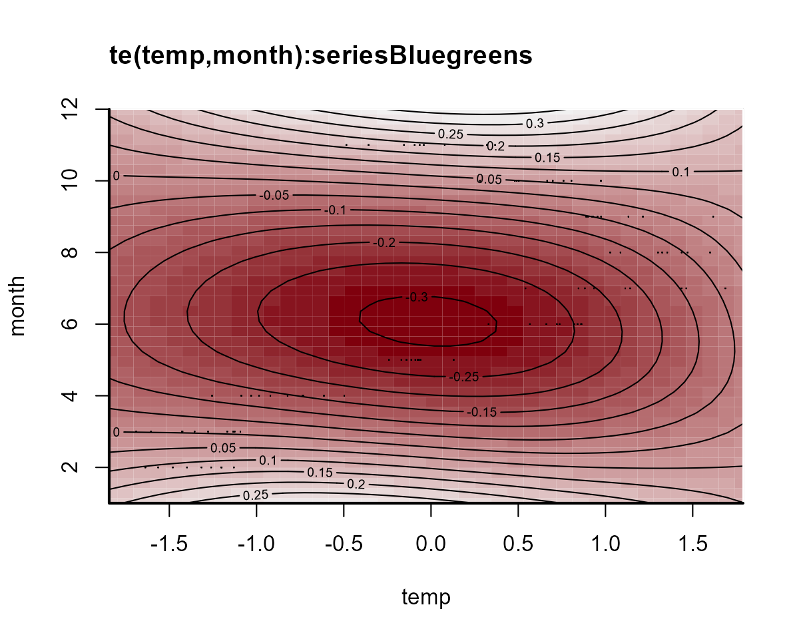
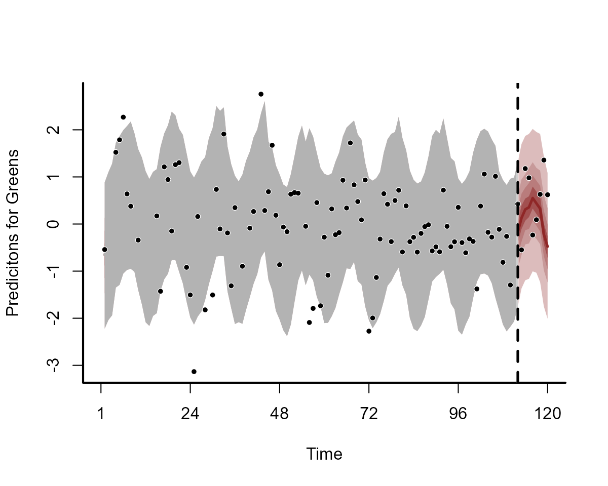
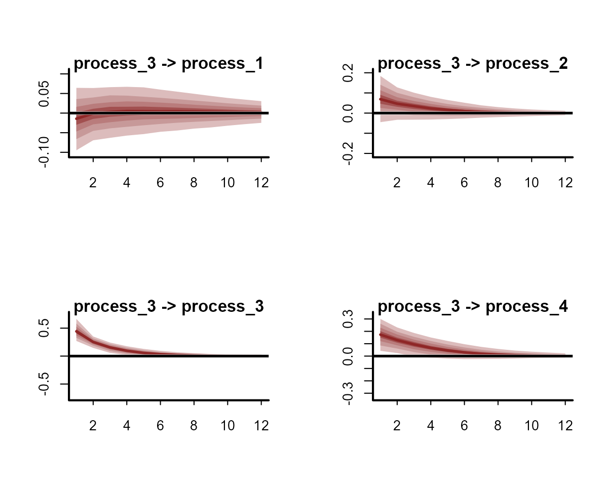

State-Space models in the mvgam package
Nicholas J Clark
2023-09-01
Source:vignettes/trend_formulas.Rmd
trend_formulas.RmdThe purpose of this vignette is to show how the mvgam
package can be used to fit and interrogate State-Space models with
nonlinear effects.
State-Space Models

Illustration of a basic State-Space model, which assumes that a latent dynamic process (X) can evolve independently from the way we take observations (Y) of that process
State-Space models allow us to separately make inferences about the
underlying dynamic process model that we are interested in
(i.e. the evolution of a time series or a collection of time series) and
the observation model (i.e. the way that we survey / measure
this underlying process). This is extremely useful in ecology because
our observations are always imperfect / noisy measurements of the thing
we are interested in measuring. It is also helpful because we often know
that some covariates will impact our ability to measure accurately
(i.e. we cannot take accurate counts of rodents if there is a
thunderstorm happening) while other covariate impact the underlying
process (it is highly unlikely that rodent abundance responds to one
storm, but instead probably responds to longer-term weather and climate
variation). A State-Space model allows us to model both components in a
single unified modelling framework. A major advantage of
mvgam is that it can include nonlinear effects and random
effects in BOTH model components while also capturing dynamic
processes.
Lake Washington plankton data
The data we will use to illustrate how we can fit State-Space models
in mvgam are from a long-term monitoring study of plankton
counts (cells per mL) taken from Lake Washington in Washington, USA. The
data are available as part of the MARSS package and can be
downloaded using the following:
We will work with five different groups of plankton:
outcomes <- c('Greens', 'Bluegreens', 'Diatoms', 'Unicells', 'Other.algae')As usual, preparing the data into the correct format for
mvgam modelling takes a little bit of wrangling in
dplyr:
# loop across each plankton group to create the long datframe
plankton_data <- do.call(rbind, lapply(outcomes, function(x){
# create a group-specific dataframe with counts labelled 'y'
# and the group name in the 'series' variable
data.frame(year = lakeWAplanktonTrans[, 'Year'],
month = lakeWAplanktonTrans[, 'Month'],
y = lakeWAplanktonTrans[, x],
series = x,
temp = lakeWAplanktonTrans[, 'Temp'])})) %>%
# change the 'series' label to a factor
dplyr::mutate(series = factor(series)) %>%
# filter to only include some years in the data
dplyr::filter(year >= 1965 & year < 1975) %>%
dplyr::arrange(year, month) %>%
dplyr::group_by(series) %>%
# z-score the counts so they are approximately standard normal
dplyr::mutate(y = as.vector(scale(y))) %>%
# add the time indicator
dplyr::mutate(time = dplyr::row_number()) %>%
dplyr::ungroup()Inspect the data structure
head(plankton_data)## # A tibble: 6 × 6
## year month y series temp time
## <dbl> <dbl> <dbl> <fct> <dbl> <int>
## 1 1965 1 -0.542 Greens -1.23 1
## 2 1965 1 -0.344 Bluegreens -1.23 1
## 3 1965 1 -0.0768 Diatoms -1.23 1
## 4 1965 1 -1.52 Unicells -1.23 1
## 5 1965 1 -0.491 Other.algae -1.23 1
## 6 1965 2 NA Greens -1.32 2
dplyr::glimpse(plankton_data)## Rows: 600
## Columns: 6
## $ year <dbl> 1965, 1965, 1965, 1965, 1965, 1965, 1965, 1965, 1965, 1965, 196…
## $ month <dbl> 1, 1, 1, 1, 1, 2, 2, 2, 2, 2, 3, 3, 3, 3, 3, 4, 4, 4, 4, 4, 5, …
## $ y <dbl> -0.54241769, -0.34410776, -0.07684901, -1.52243490, -0.49055442…
## $ series <fct> Greens, Bluegreens, Diatoms, Unicells, Other.algae, Greens, Blu…
## $ temp <dbl> -1.2306562, -1.2306562, -1.2306562, -1.2306562, -1.2306562, -1.…
## $ time <int> 1, 1, 1, 1, 1, 2, 2, 2, 2, 2, 3, 3, 3, 3, 3, 4, 4, 4, 4, 4, 5, …Note that we have z-scored the counts in this example as that will make it easier to specify priors (though this is not completely necessary; it is often better to build a model that respects the properties of the actual outcome variables)
plot_mvgam_series(data = plankton_data, series = 'all')

As usual, check the data for NAs:
image(is.na(t(plankton_data)), axes = F,
col = c('grey80', 'darkred'))
axis(3, at = seq(0,1, len = NCOL(plankton_data)),
labels = colnames(plankton_data))
We have some missing observations, but of course this isn’t an issue
for modelling in mvgam. A useful property to understand
about these counts is that they tend to be highly seasonal. Below are
some plots of z-scored counts against the z-scored temperature
measurements in the lake for each month:
plankton_data %>%
dplyr::filter(series == 'Other.algae') %>%
ggplot(aes(x = time, y = temp)) +
geom_line(size = 1.1) +
geom_line(aes(y = y), col = 'white',
size = 1.3) +
geom_line(aes(y = y), col = 'darkred',
size = 1.1) +
ylab('z-score') +
xlab('Time') +
ggtitle('Temperature (black) vs Other algae (red)')## Warning: Using `size` aesthetic for lines was deprecated in ggplot2 3.4.0.
## ℹ Please use `linewidth` instead.
## This warning is displayed once every 8 hours.
## Call `lifecycle::last_lifecycle_warnings()` to see where this warning was
## generated.
plankton_data %>%
dplyr::filter(series == 'Diatoms') %>%
ggplot(aes(x = time, y = temp)) +
geom_line(size = 1.1) +
geom_line(aes(y = y), col = 'white',
size = 1.3) +
geom_line(aes(y = y), col = 'darkred',
size = 1.1) +
ylab('z-score') +
xlab('Time') +
ggtitle('Temperature (black) vs Diatoms (red)')
plankton_data %>%
dplyr::filter(series == 'Greens') %>%
ggplot(aes(x = time, y = temp)) +
geom_line(size = 1.1) +
geom_line(aes(y = y), col = 'white',
size = 1.3) +
geom_line(aes(y = y), col = 'darkred',
size = 1.1) +
ylab('z-score') +
xlab('Time') +
ggtitle('Temperature (black) vs Greens (red)')
We will have to try and capture this seasonality in our process model, which should be easy to do given the flexibility of GAMs. Next we will split the data into training and testing splits:
plankton_train <- plankton_data %>%
dplyr::filter(time <= 112)
plankton_test <- plankton_data %>%
dplyr::filter(time > 112)Now time to fit some models. This requires a bit of thinking about how we can best tackle the seasonal variation and the likely dependence structure in the data. These algae are interacting as part of a complex system within the same lake, so we certainly expect there to be some lagged cross-dependencies underling their dynamics. But if we do not capture the seasonal variation, our multivariate dynamic model will be forced to try and capture it, which could lead to poor convergence and unstable results (we could feasibly capture cyclic dynamics with a more complex multi-species Lotka-Volterra model, but ordinary differential equation approaches are beyond the scope of this workshop).
Capturing seasonality
First we will fit a model that does not include a dynamic component,
just to see if it can reproduce the seasonal variation in the
observations. This model builds from our hierarchical GAMs above by
introducing hierarchical multidimensional smooths. It includes a
“global” tensor product of the month and temp
variables, capturing our expectation that algal seasonality responds to
temperature variation. But this response should depend on when in the
year these temperatures are recorded (i.e. a response to warm
temperatures in Spring should be different to a response to warm
temperatures in Autumn). The model also fits series-specific deviation
smooths (i.e. one tensor product per series) to capture how each algal
group’s seasonality differs from the overall “global” seasonality. Note
that we do not include series-specific intercepts in this model because
each series was z-scored to have a mean of 0.
notrend_mod <- mvgam(y ~
# tensor of temp and month to capture
# "global" seasonality
te(temp, month, k = c(4, 4)) +
# series-specific deviation tensor products
te(temp, month, k = c(4, 4), by = series),
family = gaussian(),
data = plankton_train,
newdata = plankton_test,
trend_model = 'None')The “global” tensor product smooth function can be quickly visualized:
plot_mvgam_smooth(notrend_mod, smooth = 1)
We can then plot the deviation smooths for each algal group to see how they vary from the “global” pattern:
plot_mvgam_smooth(notrend_mod, smooth = 2)
plot_mvgam_smooth(notrend_mod, smooth = 3)
plot_mvgam_smooth(notrend_mod, smooth = 4)
plot_mvgam_smooth(notrend_mod, smooth = 5)
plot_mvgam_smooth(notrend_mod, smooth = 6)
These multidimensional smooths have done a good job of capturing the seasonal variation in our observations:
plot(notrend_mod, type = 'forecast', series = 1)
plot(notrend_mod, type = 'forecast', series = 2)
plot(notrend_mod, type = 'forecast', series = 3)
plot(notrend_mod, type = 'forecast', series = 4)
plot(notrend_mod, type = 'forecast', series = 5)
Multiseries dynamics
The basic model gives us confidence that we can capture the seasonal variation in the observations. But the model has not captured the remaining temporal dynamics, which is obvious when we inspect Dunn-Smyth residuals for each series:
plot(notrend_mod, type = 'residuals', series = 1)
plot(notrend_mod, type = 'residuals', series = 2)
plot(notrend_mod, type = 'residuals', series = 3)
plot(notrend_mod, type = 'residuals', series = 4)
plot(notrend_mod, type = 'residuals', series = 5)
Now it is time to get into multivariate State-Space models. We will fit two models that can both incorporate lagged cross-dependencies in the latent process models. The first model assumes that the process errors operate independnetly from one another, while the second assumes that there may be contemporaneous correlations in the process errors. Both models include a Vector Autoregressive component for the process means, and so both can model complex community dynamics. The models can be described mathematically as follows:
\[\begin{align*} \boldsymbol{count}_t & \sim \text{Normal}(\mu_{obs[t]}, \sigma_{obs}) \\ \mu_{obs[t]} & = \alpha + process_t \\ \sigma_{obs} & \sim \text{Uniform}(0.1, 1) \\ process_t & \sim \text{MVNormal}(\mu_{process[t]}, \Sigma_{process}) \\ \mu_{process[t]} & = VAR * process_{t-1} + f_{global}(\boldsymbol{month},\boldsymbol{temp})_t + f_{series}(\boldsymbol{month},\boldsymbol{temp})_t \\ f_{global}(\boldsymbol{month},\boldsymbol{temp}) & = \sum_{k=1}^{K}b_{global} * \beta_{global} \\ f_{series}(\boldsymbol{month},\boldsymbol{temp}) & = \sum_{k=1}^{K}b_{series} * \beta_{series} \\ VAR & \sim \text{Normal}(0, 1) \\ \Sigma_{process} & = \text{diag}(\sigma_{process}) * \text{R} * \text{diag}(\sigma_{process}) \\ \text{R} & \sim \text{LKJcorr}(2) \end{align*}\]
Here you can see that we assume independent observation processes
(there is no covariance structure in the observation errors \(\sigma_{obs}\)) but there is a lot going on
in the underlying process model. This component has a Vector
Autoregressive part (where the process mean at time \(t\) \((\mu_{process[t]})\)) is a vector that
evolves as a function of where the vector-valued process model was at
time \(t-1\). The \(VAR\) matrix captures these dynamics with
self-dependencies on the diagonal and possibly assymetric
cross-dependencies on the off-diagonals. The contemporaneous process
errors are captured by \(\Sigma_{process}\), which can be
constrained so that process errors are independent (i.e. setting the
off-diagonals to 0) or can be fully parameterized using a Cholesky
decomposition (using Stan’s \(LKJcorr\) distribution to place a prior on
the strength of inter-species correlations).
Ok that was a lot to take in. Let’s fit some models to try and
inspect what is going on and what they assume. But first, we need to
update mvgam’s default priors for the observation errors.
By default, mvgam uses a fairly wide Student-T prior on
this parameter because the package doesn’t know what range the
observations will be on. But our observations are z-scored and so we do
not expect very large observation errors. However, we also do not expect
very small observation errors. So let’s update the prior for this
parameter. In doing so, you will get to see how the formula for the
latent process (i.e. trend) model is used in mvgam:
priors <- get_mvgam_priors(
# observation formula, which just uses an intercept
y ~ 1,
# process model formula, which includes the smooth functions
trend_formula = ~ te(temp, month, k = c(4, 4)) +
te(temp, month, k = c(4, 4), by = trend),
# VAR1 model with uncorrelated process errors
trend_model = 'VAR1',
family = gaussian(),
data = plankton_train)
# update the sigma_obs prior so that it avoids very small
# and very large values that are nonsensical
priors$prior[10] <- "sigma_obs ~ uniform(0.1, 1);"
priors$new_lowerbound[10] <- 0.1
priors$new_upperbound[10] <- 1Note that if you already know the names of parameters for which you’d
like to modify the priors, you can more quickly make edits using
brms functionality:
priors <- prior(uniform(0.1, 1), class = sigma_obs, lb = 0.1, ub = 1)Now we can fit the first model, which assumes that process errors are contemporaneously uncorrelated
var_mod <- mvgam(
# observation formula, which just uses an intercept
y ~ 1,
# process model formula, which includes the smooth functions
trend_formula = ~ te(temp, month, k = c(4, 4)) +
te(temp, month, k = c(4, 4), by = trend),
# VAR1 model with uncorrelated process errors
trend_model = 'VAR1',
family = gaussian(),
data = plankton_train,
newdata = plankton_test,
# include the updated priors
priors = priors)Inspecting SS models
This model’s summary is a bit different to other mvgam
summaries. It separates parameters based on whether they belong to the
observation model or to the latent process model. This is because we may
often have covariates that impact the observations but not the latent
process, so we can have fairly complex models for each component. You
will notice that some parameters have not fully converged, particularly
for the VAR coefficients (called A in the output) and for
the process errors (Sigma)
summary(var_mod)## GAM observation formula:
## y ~ 1
##
## GAM process formula:
## ~te(temp, month, k = c(4, 4)) + te(temp, month, k = c(4, 4),
## by = trend)
##
## Family:
## gaussian
##
## Link function:
## identity
##
## Trend model:
## VAR1
##
## N process models:
## 5
##
## N series:
## 5
##
## N timepoints:
## 112
##
## Status:
## Fitted using Stan
##
## Observation error parameter estimates:
## 2.5% 50% 97.5% Rhat n.eff
## sigma_obs[1] 0.1052991 0.1811495 0.2813464 1.02 144
## sigma_obs[2] 0.1242697 0.2949510 0.5204035 1.20 14
## sigma_obs[3] 0.6946586 0.8695095 0.9845834 1.05 170
## sigma_obs[4] 0.1052882 0.2615715 0.4288121 1.06 57
## sigma_obs[5] 0.1595682 0.4081365 0.5494945 1.02 84
##
## GAM observation model coefficient (beta) estimates:
## 2.5% 50% 97.5% Rhat n.eff
## (Intercept) -0.1391948 -0.0449367 0.05325132 1.02 147
##
## Process model VAR parameter estimates:
## 2.5% 50% 97.5% Rhat n.eff
## A[1,1] 0.09091800 0.4000530000 0.677639700 1.01 460
## A[1,2] -0.97956900 0.3463950000 1.651819000 1.06 74
## A[1,3] -0.50627168 -0.2152230000 0.006505871 1.02 270
## A[1,4] -0.18597490 0.0662921500 0.343116975 1.02 139
## A[1,5] -0.04814212 0.2194740000 0.674904000 1.02 268
## A[2,1] -0.31033278 -0.0404800500 0.188636950 1.03 142
## A[2,2] -0.04131058 0.6830670000 0.994074800 1.02 131
## A[2,3] -0.16341940 -0.0006169285 0.138744175 1.01 478
## A[2,4] -0.12301905 0.0090723350 0.266247975 1.03 124
## A[2,5] -0.18249940 0.0044988400 0.253894800 1.01 391
## A[3,1] -0.43564143 -0.1547365000 0.014242595 1.03 166
## A[3,2] -0.35605073 0.0720120000 0.656650675 1.04 279
## A[3,3] 0.57351807 0.7504070000 0.886146875 1.00 503
## A[3,4] -0.07032817 0.0535489000 0.192888425 1.00 651
## A[3,5] -0.02462768 0.1391675000 0.408809100 1.01 296
## A[4,1] -0.62385665 -0.1888940000 0.100756200 1.02 212
## A[4,2] -0.76857165 0.5292465000 2.014025750 1.07 71
## A[4,3] -0.45724915 -0.1492865000 0.087988112 1.01 224
## A[4,4] 0.37418228 0.6716615000 0.913073100 1.02 148
## A[4,5] -0.13258020 0.1841570000 0.685445875 1.01 196
## A[5,1] -0.43833360 -0.0856798000 0.144713525 1.03 145
## A[5,2] -0.62475467 0.1808065000 1.210113000 1.05 130
## A[5,3] -0.09258733 0.0689361000 0.297405775 1.00 278
## A[5,4] -0.23924850 -0.0479704000 0.129515675 1.01 312
## A[5,5] 0.38084458 0.7104450000 0.926108950 1.01 158
##
## Process error parameter estimates:
## 2.5% 50% 97.5% Rhat n.eff
## Sigma[1,1] 0.049459570 0.18539350 0.3458370 1.12 30
## Sigma[1,2] 0.000000000 0.00000000 0.0000000 NaN NaN
## Sigma[1,3] 0.000000000 0.00000000 0.0000000 NaN NaN
## Sigma[1,4] 0.000000000 0.00000000 0.0000000 NaN NaN
## Sigma[1,5] 0.000000000 0.00000000 0.0000000 NaN NaN
## Sigma[2,1] 0.000000000 0.00000000 0.0000000 NaN NaN
## Sigma[2,2] 0.009012433 0.04584075 0.2548712 1.25 19
## Sigma[2,3] 0.000000000 0.00000000 0.0000000 NaN NaN
## Sigma[2,4] 0.000000000 0.00000000 0.0000000 NaN NaN
## Sigma[2,5] 0.000000000 0.00000000 0.0000000 NaN NaN
## Sigma[3,1] 0.000000000 0.00000000 0.0000000 NaN NaN
## Sigma[3,2] 0.000000000 0.00000000 0.0000000 NaN NaN
## Sigma[3,3] 0.079234650 0.13648650 0.2055316 1.01 298
## Sigma[3,4] 0.000000000 0.00000000 0.0000000 NaN NaN
## Sigma[3,5] 0.000000000 0.00000000 0.0000000 NaN NaN
## Sigma[4,1] 0.000000000 0.00000000 0.0000000 NaN NaN
## Sigma[4,2] 0.000000000 0.00000000 0.0000000 NaN NaN
## Sigma[4,3] 0.000000000 0.00000000 0.0000000 NaN NaN
## Sigma[4,4] 0.099436140 0.22625650 0.3926745 1.04 119
## Sigma[4,5] 0.000000000 0.00000000 0.0000000 NaN NaN
## Sigma[5,1] 0.000000000 0.00000000 0.0000000 NaN NaN
## Sigma[5,2] 0.000000000 0.00000000 0.0000000 NaN NaN
## Sigma[5,3] 0.000000000 0.00000000 0.0000000 NaN NaN
## Sigma[5,4] 0.000000000 0.00000000 0.0000000 NaN NaN
## Sigma[5,5] 0.049385695 0.12917400 0.3219656 1.01 88
##
## GAM process model coefficient (beta) estimates:
## 2.5% 50% 97.5% Rhat
## te(temp,month).1_trend -0.73788025 -0.230447000 0.32427292 1.00
## te(temp,month).2_trend -0.74740668 -0.050644900 0.84017467 1.00
## te(temp,month).3_trend -1.09053100 -0.325192500 0.31186270 1.00
## te(temp,month).4_trend -0.60879025 -0.226713000 0.14807600 1.02
## te(temp,month).5_trend -0.07064458 0.298666000 0.76109602 1.02
## te(temp,month).6_trend -0.38945945 0.036743300 0.60984428 1.01
## te(temp,month).7_trend -0.55888058 -0.227418000 0.08935860 1.00
## te(temp,month).8_trend -0.85095097 -0.187895000 0.65785577 1.01
## te(temp,month).9_trend 0.05928827 0.405286500 0.79234040 1.03
## te(temp,month).10_trend 0.24841303 0.672046000 1.13550475 1.04
## te(temp,month).11_trend -0.75532708 -0.164412000 0.42114777 1.01
## te(temp,month).12_trend -1.02365450 -0.206441500 1.02021650 1.01
## te(temp,month).13_trend -0.41026595 0.162632000 0.79710922 1.00
## te(temp,month).14_trend 0.13187200 0.604971000 1.05417950 1.02
## te(temp,month).15_trend -1.18576925 -0.061258550 1.13251200 1.01
## te(temp,month):trendtrend1.1_trend -0.20649007 0.728945500 1.55768150 1.00
## te(temp,month):trendtrend1.2_trend -0.87366363 0.535348000 1.91913450 1.01
## te(temp,month):trendtrend1.3_trend -1.23695275 -0.298422500 0.93104867 1.02
## te(temp,month):trendtrend1.4_trend -0.53196487 0.002278480 0.66256680 1.02
## te(temp,month):trendtrend1.5_trend 0.58097515 1.216720000 1.80503950 1.01
## te(temp,month):trendtrend1.6_trend -0.76644028 0.072939000 0.87063967 1.01
## te(temp,month):trendtrend1.7_trend -0.73476070 -0.244208500 0.26460395 1.01
## te(temp,month):trendtrend1.8_trend -0.90043045 -0.031059500 1.38734875 1.02
## te(temp,month):trendtrend1.9_trend 0.40481720 1.129325000 1.72797100 1.01
## te(temp,month):trendtrend1.10_trend -1.10125875 -0.472596000 0.19553080 1.00
## te(temp,month):trendtrend1.11_trend -1.32126175 -0.049901050 0.67694755 1.03
## te(temp,month):trendtrend1.12_trend -1.19774900 -0.047073000 1.72462000 1.02
## te(temp,month):trendtrend1.13_trend -0.73775623 0.447504500 1.64612000 1.01
## te(temp,month):trendtrend1.14_trend -1.45259875 -0.744650500 -0.04983485 1.01
## te(temp,month):trendtrend1.15_trend -2.29279500 0.414270000 1.80242200 1.04
## te(temp,month):trendtrend2.1_trend -0.32399565 0.127947500 0.75978612 1.01
## te(temp,month):trendtrend2.2_trend -0.43867845 0.090215750 0.71759740 1.01
## te(temp,month):trendtrend2.3_trend -0.61620822 0.005699600 0.58096690 1.00
## te(temp,month):trendtrend2.4_trend -0.63718493 -0.145199500 0.24384965 1.01
## te(temp,month):trendtrend2.5_trend -0.42839647 -0.002569680 0.47318220 1.00
## te(temp,month):trendtrend2.6_trend -0.34704855 0.014668400 0.42766212 1.00
## te(temp,month):trendtrend2.7_trend -0.52084040 -0.100791500 0.28341800 1.00
## te(temp,month):trendtrend2.8_trend -0.68303140 -0.095755900 0.42515125 1.00
## te(temp,month):trendtrend2.9_trend -0.39803615 -0.003709595 0.37114490 1.02
## te(temp,month):trendtrend2.10_trend -0.50076252 -0.029677450 0.43012475 1.02
## te(temp,month):trendtrend2.11_trend -0.52618725 -0.067361800 0.35221242 1.00
## te(temp,month):trendtrend2.12_trend -0.61990492 0.022730200 0.67112987 1.00
## te(temp,month):trendtrend2.13_trend -0.32395170 0.124677000 0.63854585 1.01
## te(temp,month):trendtrend2.14_trend -0.25525297 0.153094000 0.64843202 1.00
## te(temp,month):trendtrend2.15_trend -0.65743575 0.068956550 0.80927735 1.01
## te(temp,month):trendtrend3.1_trend -0.61449245 -0.078767100 0.38252060 1.00
## te(temp,month):trendtrend3.2_trend -0.79608932 -0.102499500 0.38932497 1.00
## te(temp,month):trendtrend3.3_trend -0.46752965 0.088040100 0.74869657 1.01
## te(temp,month):trendtrend3.4_trend -0.37177815 0.018692650 0.42550347 1.01
## te(temp,month):trendtrend3.5_trend -0.79053142 -0.243218500 0.12250802 1.03
## te(temp,month):trendtrend3.6_trend -0.53255707 -0.099852250 0.24177667 1.01
## te(temp,month):trendtrend3.7_trend -0.13084535 0.190139500 0.56300117 1.01
## te(temp,month):trendtrend3.8_trend -0.56623190 0.021381000 0.60326032 1.01
## te(temp,month):trendtrend3.9_trend -0.73973655 -0.234461500 0.10080305 1.03
## te(temp,month):trendtrend3.10_trend -0.52607270 -0.034494000 0.36275635 1.03
## te(temp,month):trendtrend3.11_trend -0.18796715 0.227658500 0.71165955 1.01
## te(temp,month):trendtrend3.12_trend -0.65574957 0.120966000 0.80479397 1.01
## te(temp,month):trendtrend3.13_trend -0.73654630 -0.131729000 0.29696047 1.01
## te(temp,month):trendtrend3.14_trend -0.56467608 -0.131117500 0.30480582 1.01
## te(temp,month):trendtrend3.15_trend -0.54731040 0.123452500 0.93538837 1.01
## te(temp,month):trendtrend4.1_trend -0.94832363 -0.285925500 0.19024445 1.00
## te(temp,month):trendtrend4.2_trend -0.81493550 -0.157447000 0.45360282 1.00
## te(temp,month):trendtrend4.3_trend -0.77749375 -0.062661200 0.49554525 1.01
## te(temp,month):trendtrend4.4_trend -0.39211130 -0.002852865 0.42670787 1.00
## te(temp,month):trendtrend4.5_trend -0.46421285 -0.005265335 0.42423950 1.01
## te(temp,month):trendtrend4.6_trend -0.41473412 -0.030761200 0.44882722 1.01
## te(temp,month):trendtrend4.7_trend -0.44119913 -0.057631450 0.26824877 1.00
## te(temp,month):trendtrend4.8_trend -0.61153537 -0.064239750 0.56985362 1.00
## te(temp,month):trendtrend4.9_trend -0.15156105 0.179617500 0.63782870 1.01
## te(temp,month):trendtrend4.10_trend -0.16127482 0.284152500 0.84657857 1.01
## te(temp,month):trendtrend4.11_trend -0.62272665 -0.078763400 0.40524877 1.00
## te(temp,month):trendtrend4.12_trend -0.89729800 -0.175094500 0.68422402 1.00
## te(temp,month):trendtrend4.13_trend -0.40670460 0.039881850 0.63828035 1.01
## te(temp,month):trendtrend4.14_trend -0.34796122 0.080747750 0.58681512 1.00
## te(temp,month):trendtrend4.15_trend -1.05269675 -0.201703500 0.57803562 1.00
## te(temp,month):trendtrend5.1_trend -0.40499020 0.211310000 0.93989577 1.01
## te(temp,month):trendtrend5.2_trend -0.42797652 0.244051000 1.30928100 1.00
## te(temp,month):trendtrend5.3_trend -1.17512750 -0.358366000 0.33379357 1.01
## te(temp,month):trendtrend5.4_trend -0.65833645 -0.194516500 0.29514262 1.01
## te(temp,month):trendtrend5.5_trend 0.04513567 0.565158500 1.19330075 1.01
## te(temp,month):trendtrend5.6_trend -0.19987937 0.229852500 0.90240530 1.00
## te(temp,month):trendtrend5.7_trend -0.57416228 -0.170717000 0.20907520 1.01
## te(temp,month):trendtrend5.8_trend -0.72023595 -0.106386000 0.69482212 1.01
## te(temp,month):trendtrend5.9_trend -0.08523457 0.305309000 0.73983945 1.01
## te(temp,month):trendtrend5.10_trend -0.07126673 0.437620000 1.07315775 1.03
## te(temp,month):trendtrend5.11_trend -0.61873727 -0.135481000 0.37142952 1.01
## te(temp,month):trendtrend5.12_trend -0.88794045 -0.145928500 0.62389335 1.00
## te(temp,month):trendtrend5.13_trend -0.69359570 -0.032394700 0.51417732 1.00
## te(temp,month):trendtrend5.14_trend -0.12237095 0.327509500 0.94098200 1.01
## te(temp,month):trendtrend5.15_trend -1.01056525 -0.121452500 0.80954160 1.01
## n.eff
## te(temp,month).1_trend 463
## te(temp,month).2_trend 487
## te(temp,month).3_trend 643
## te(temp,month).4_trend 254
## te(temp,month).5_trend 274
## te(temp,month).6_trend 360
## te(temp,month).7_trend 376
## te(temp,month).8_trend 292
## te(temp,month).9_trend 229
## te(temp,month).10_trend 149
## te(temp,month).11_trend 245
## te(temp,month).12_trend 456
## te(temp,month).13_trend 557
## te(temp,month).14_trend 300
## te(temp,month).15_trend 295
## te(temp,month):trendtrend1.1_trend 559
## te(temp,month):trendtrend1.2_trend 676
## te(temp,month):trendtrend1.3_trend 369
## te(temp,month):trendtrend1.4_trend 369
## te(temp,month):trendtrend1.5_trend 418
## te(temp,month):trendtrend1.6_trend 450
## te(temp,month):trendtrend1.7_trend 433
## te(temp,month):trendtrend1.8_trend 285
## te(temp,month):trendtrend1.9_trend 319
## te(temp,month):trendtrend1.10_trend 684
## te(temp,month):trendtrend1.11_trend 185
## te(temp,month):trendtrend1.12_trend 414
## te(temp,month):trendtrend1.13_trend 576
## te(temp,month):trendtrend1.14_trend 607
## te(temp,month):trendtrend1.15_trend 168
## te(temp,month):trendtrend2.1_trend 392
## te(temp,month):trendtrend2.2_trend 428
## te(temp,month):trendtrend2.3_trend 868
## te(temp,month):trendtrend2.4_trend 522
## te(temp,month):trendtrend2.5_trend 544
## te(temp,month):trendtrend2.6_trend 815
## te(temp,month):trendtrend2.7_trend 530
## te(temp,month):trendtrend2.8_trend 798
## te(temp,month):trendtrend2.9_trend 322
## te(temp,month):trendtrend2.10_trend 434
## te(temp,month):trendtrend2.11_trend 886
## te(temp,month):trendtrend2.12_trend 900
## te(temp,month):trendtrend2.13_trend 814
## te(temp,month):trendtrend2.14_trend 753
## te(temp,month):trendtrend2.15_trend 778
## te(temp,month):trendtrend3.1_trend 486
## te(temp,month):trendtrend3.2_trend 462
## te(temp,month):trendtrend3.3_trend 679
## te(temp,month):trendtrend3.4_trend 483
## te(temp,month):trendtrend3.5_trend 273
## te(temp,month):trendtrend3.6_trend 502
## te(temp,month):trendtrend3.7_trend 435
## te(temp,month):trendtrend3.8_trend 538
## te(temp,month):trendtrend3.9_trend 234
## te(temp,month):trendtrend3.10_trend 195
## te(temp,month):trendtrend3.11_trend 578
## te(temp,month):trendtrend3.12_trend 585
## te(temp,month):trendtrend3.13_trend 443
## te(temp,month):trendtrend3.14_trend 602
## te(temp,month):trendtrend3.15_trend 915
## te(temp,month):trendtrend4.1_trend 570
## te(temp,month):trendtrend4.2_trend 605
## te(temp,month):trendtrend4.3_trend 407
## te(temp,month):trendtrend4.4_trend 915
## te(temp,month):trendtrend4.5_trend 586
## te(temp,month):trendtrend4.6_trend 561
## te(temp,month):trendtrend4.7_trend 613
## te(temp,month):trendtrend4.8_trend 412
## te(temp,month):trendtrend4.9_trend 429
## te(temp,month):trendtrend4.10_trend 497
## te(temp,month):trendtrend4.11_trend 507
## te(temp,month):trendtrend4.12_trend 353
## te(temp,month):trendtrend4.13_trend 452
## te(temp,month):trendtrend4.14_trend 535
## te(temp,month):trendtrend4.15_trend 632
## te(temp,month):trendtrend5.1_trend 524
## te(temp,month):trendtrend5.2_trend 630
## te(temp,month):trendtrend5.3_trend 428
## te(temp,month):trendtrend5.4_trend 468
## te(temp,month):trendtrend5.5_trend 329
## te(temp,month):trendtrend5.6_trend 547
## te(temp,month):trendtrend5.7_trend 454
## te(temp,month):trendtrend5.8_trend 617
## te(temp,month):trendtrend5.9_trend 541
## te(temp,month):trendtrend5.10_trend 234
## te(temp,month):trendtrend5.11_trend 538
## te(temp,month):trendtrend5.12_trend 1060
## te(temp,month):trendtrend5.13_trend 1255
## te(temp,month):trendtrend5.14_trend 362
## te(temp,month):trendtrend5.15_trend 567
##
## GAM process smoothing parameter (rho) estimates:
## 2.5% 50% 97.5% Rhat
## te(temp,month)_rho_trend 1.52018450 3.316735 4.225933 1.00
## te(temp,month)2_rho_trend -0.07375045 2.300555 3.969020 1.02
## te(temp,month)3_rho_trend -0.67384587 2.074115 3.990929 1.00
## te(temp,month):seriestrend1_rho_trend 0.48923058 2.684400 4.006977 1.00
## te(temp,month):seriestrend12_rho_trend -2.22093250 -0.502005 2.824346 1.02
## te(temp,month):seriestrend13_rho_trend -1.58880125 2.508325 4.054055 1.05
## te(temp,month):seriestrend2_rho_trend 1.11012225 3.115165 4.179771 1.01
## te(temp,month):seriestrend22_rho_trend 1.18384150 3.157635 4.167201 1.00
## te(temp,month):seriestrend23_rho_trend 0.95027112 3.125050 4.178380 1.00
## te(temp,month):seriestrend3_rho_trend 1.48279450 3.207315 4.184309 1.00
## te(temp,month):seriestrend32_rho_trend 0.49551505 2.892235 4.106666 1.02
## te(temp,month):seriestrend33_rho_trend 0.50766173 3.090635 4.163463 1.01
## te(temp,month):seriestrend4_rho_trend 1.34355250 3.188770 4.182075 1.00
## te(temp,month):seriestrend42_rho_trend 0.56057818 3.033990 4.119350 1.01
## te(temp,month):seriestrend43_rho_trend 0.11450175 3.062945 4.165412 1.01
## te(temp,month):seriestrend5_rho_trend 0.80465620 3.145535 4.143281 1.00
## te(temp,month):seriestrend52_rho_trend -0.30574052 2.038070 3.910541 1.01
## te(temp,month):seriestrend53_rho_trend 0.67168060 3.067810 4.139428 1.01
## n.eff
## te(temp,month)_rho_trend 720
## te(temp,month)2_rho_trend 235
## te(temp,month)3_rho_trend 337
## te(temp,month):seriestrend1_rho_trend 631
## te(temp,month):seriestrend12_rho_trend 201
## te(temp,month):seriestrend13_rho_trend 162
## te(temp,month):seriestrend2_rho_trend 568
## te(temp,month):seriestrend22_rho_trend 736
## te(temp,month):seriestrend23_rho_trend 780
## te(temp,month):seriestrend3_rho_trend 1077
## te(temp,month):seriestrend32_rho_trend 298
## te(temp,month):seriestrend33_rho_trend 593
## te(temp,month):seriestrend4_rho_trend 820
## te(temp,month):seriestrend42_rho_trend 396
## te(temp,month):seriestrend43_rho_trend 291
## te(temp,month):seriestrend5_rho_trend 591
## te(temp,month):seriestrend52_rho_trend 297
## te(temp,month):seriestrend53_rho_trend 666
##
## Stan MCMC diagnostics:
## n_eff / iter looks reasonable for all parameters
## Rhats above 1.05 found for 62 parameters
## *Diagnose further to investigate why the chains have not mixed
## 0 of 2000 iterations ended with a divergence (0%)
## 0 of 2000 iterations saturated the maximum tree depth of 12 (0%)
## Chain 1: E-FMI = 0.1843
## Chain 2: E-FMI = 0.1477
## Chain 4: E-FMI = 0.1519
## *E-FMI below 0.2 indicates you may need to reparameterize your modelThe convergence of this model isn’t fabulous (more on this in a
moment). But we can again plot the smooth functions, which this time
operate on the process model. We can see the same plot using
trend_effects = TRUE in the plotting functions:
plot(var_mod, 'smooths', trend_effects = TRUE)

The VAR matrix is of particular interest here, as it captures lagged dependencies and cross-dependencies in the latent process model:
mcmc_plot(var_mod, variable = 'A', regex = TRUE, type = 'hist')
Unfortunately bayesplot doesn’t know this is a matrix of
parameters so what we see is actually the transpose of the VAR matrix. A
little bit of wrangling gives us these histograms in the correct
order:
A_pars <- matrix(NA, nrow = 5, ncol = 5)
for(i in 1:5){
for(j in 1:5){
A_pars[i, j] <- paste0('A[', i, ',', j, ']')
}
}
mcmc_plot(var_mod,
variable = as.vector(t(A_pars)),
type = 'hist')
There is a lot happening in this matrix. Each cell captures the lagged effect of the process in the column on the process in the row in the next timestep. So for example, the effect in cell [3,1], which is quite strongly negative, means that an increase in the process for series 3 (Greens) at time \(t\) is expected to lead to a subsequent decrease in the process for series 1 (Bluegreens) at time \(t+1\). The latent process model is now capturing these effects and the smooth seasonal effects, so the trend plot shows our best estimate of what the true count should have been at each time point:
plot(var_mod, type = 'trend', series = 1)
plot(var_mod, type = 'trend', series = 3)
The process error \((\Sigma)\) captures unmodelled variation in the process models. Again, we fixed the off-diagonals to 0, so the histograms for these will look like flat boxes:
Sigma_pars <- matrix(NA, nrow = 5, ncol = 5)
for(i in 1:5){
for(j in 1:5){
Sigma_pars[i, j] <- paste0('Sigma[', i, ',', j, ']')
}
}
mcmc_plot(var_mod,
variable = as.vector(t(Sigma_pars)),
type = 'hist')
The observation error estimates \((\sigma_{obs})\) represent how much the model thinks we might miss the true count when we take our imperfect measurements:
mcmc_plot(var_mod, variable = 'sigma_obs', regex = TRUE, type = 'hist')
These are still a bit hard to identify overall.
Correlated process errors
Let’s see if the estimates improve when we allow the process errors to be correlated. Once again, we need to first update the priors for the observation errors:
priors <- get_mvgam_priors(
# observation formula, which just uses an intercept
y ~ 1,
# process model formula, which includes the smooth functions
trend_formula = ~ te(temp, month, k = c(4, 4)) +
te(temp, month, k = c(4, 4), by = trend),
# VAR1 model with correlated process errors
trend_model = 'VAR1cor',
family = gaussian(),
data = plankton_train)
# update the sigma_obs prior so that it avoids very small
# and very large values that are nonsensical
priors$prior[11] <- "sigma_obs ~ uniform(0.1, 1);"
priors$new_lowerbound[11] <- 0.1
priors$new_upperbound[11] <- 1And now we can fit the correlated process error model.
varcor_mod <- mvgam(
# observation formula, which just uses an intercept
y ~ 1,
# process model formula, which includes the smooth functions
trend_formula = ~ te(temp, month, k = c(4, 4)) +
te(temp, month, k = c(4, 4), by = trend),
# VAR1 model with correlated process errors
trend_model = 'VAR1cor',
family = gaussian(),
data = plankton_train,
newdata = plankton_test,
# include the updated priors
priors = priors)Plot convergence diagnostics for the two models, which shows that the more complex model with correlated errors has better convergence:
mcmc_plot(varcor_mod, type = 'rhat') +
labs(title = 'VAR1cor')
mcmc_plot(var_mod, type = 'rhat') +
labs(title = 'VAR1')
We can also check convergence using one of the package’s inbuilt utility functions:
mvgam:::check_rhat(varcor_mod$model_output)## Rhats above 1.05 found for 18 parameters
## *Diagnose further to investigate why the chains have not mixed
mvgam:::check_rhat(var_mod$model_output)## Rhats above 1.05 found for 62 parameters
## *Diagnose further to investigate why the chains have not mixedThis model has converged better than the first model (that assumed process errors were independent), possibly telling us that this is a more appropriate model. The \((\Sigma)\) matrix now captures any evidence of contemporaneously correlated process error:
Sigma_pars <- matrix(NA, nrow = 5, ncol = 5)
for(i in 1:5){
for(j in 1:5){
Sigma_pars[i, j] <- paste0('Sigma[', i, ',', j, ']')
}
}
mcmc_plot(varcor_mod,
variable = as.vector(t(Sigma_pars)),
type = 'hist')
This symmetric matrix tells us there is support for correlated process errors. For example, series 1 and 3 (Bluegreens and Greens) show negatively correlated process errors, while series 1 and 4 (Bluegreens and Other.algae) show positively correlated errors. But it is easier to interpret these estimates if we convert the covariance matrix to a correlation matrix. Here we compute the posterior median process error correlations:
Sigma_post <- as.matrix(varcor_mod, variable = 'Sigma', regex = TRUE)
median_correlations <- cov2cor(matrix(apply(Sigma_post, 2, median),
nrow = 5, ncol = 5))
rownames(median_correlations) <-
colnames(median_correlations) <-
levels(plankton_train$series)
round(median_correlations, 2)## Bluegreens Diatoms Greens Other.algae Unicells
## Bluegreens 1.00 0.16 -0.17 0.40 0.13
## Diatoms 0.16 1.00 0.01 0.42 0.03
## Greens -0.17 0.01 1.00 0.15 0.44
## Other.algae 0.40 0.42 0.15 1.00 0.28
## Unicells 0.13 0.03 0.44 0.28 1.00Because this model is able to capture correlated errors, the VAR matrix has changed slightly:
A_pars <- matrix(NA, nrow = 5, ncol = 5)
for(i in 1:5){
for(j in 1:5){
A_pars[i, j] <- paste0('A[', i, ',', j, ']')
}
}
mcmc_plot(varcor_mod,
variable = as.vector(t(A_pars)),
type = 'hist')
We still have some evidence of lagged cross-dependence, but some of these interactions have now been pulled more toward zero. But which model is better? Forecasts don’t appear to differ very much, at least qualitatively (here are forecasts for three of the series, for each model):
plot(var_mod, type = 'forecast', series = 1, newdata = plankton_test)
## Out of sample CRPS:
## [1] 2.995416
plot(varcor_mod, type = 'forecast', series = 1, newdata = plankton_test)
## Out of sample CRPS:
## [1] 3.137511
plot(var_mod, type = 'forecast', series = 2, newdata = plankton_test)
## Out of sample CRPS:
## [1] 6.100556
plot(varcor_mod, type = 'forecast', series = 2, newdata = plankton_test)
## Out of sample CRPS:
## [1] 5.92898
plot(var_mod, type = 'forecast', series = 3, newdata = plankton_test)
## Out of sample CRPS:
## [1] 4.132173
plot(varcor_mod, type = 'forecast', series = 3, newdata = plankton_test)
## Out of sample CRPS:
## [1] 4.127152We can compute the variogram score for out of sample forecasts to get a sense of which model does a better job of capturing the dependence structure in the true evaluation set:
# create forecast objects for each model
fcvar <- forecast(var_mod)
fcvarcor <- forecast(varcor_mod)
# plot the difference in variogram scores; a negative value means the VAR1cor model is better, while a positive value means the VAR1 model is better
diff_scores <- score(fcvarcor, score = 'variogram')$all_series$score -
score(fcvar, score = 'variogram')$all_series$score
plot(diff_scores, pch = 16, cex = 1.25, col = 'darkred',
ylim = c(-1*max(abs(diff_scores), na.rm = TRUE),
max(abs(diff_scores), na.rm = TRUE)),
bty = 'l',
xlab = 'Forecast horizon',
ylab = expression(variogram[VAR1cor]~-~variogram[VAR1]))
abline(h = 0, lty = 'dashed')
And we can also compute the energy score for out of sample forecasts to get a sense of which model provides forecasts that are better calibrated:
# plot the difference in energy scores; a negative value means the VAR1cor model is better, while a positive value means the VAR1 model is better
diff_scores <- score(fcvarcor, score = 'energy')$all_series$score -
score(fcvar, score = 'energy')$all_series$score
plot(diff_scores, pch = 16, cex = 1.25, col = 'darkred',
ylim = c(-1*max(abs(diff_scores), na.rm = TRUE),
max(abs(diff_scores), na.rm = TRUE)),
bty = 'l',
xlab = 'Forecast horizon',
ylab = expression(energy[VAR1cor]~-~energy[VAR1]))
abline(h = 0, lty = 'dashed')
The models tend to provide similar forecasts, so we would probably
need to use a more extensive rolling forecast evaluation exercise if we
felt like we needed to only choose one for production.
mvgam offers some utilities for doing this (i.e. see
?lfo_cv for guidance).